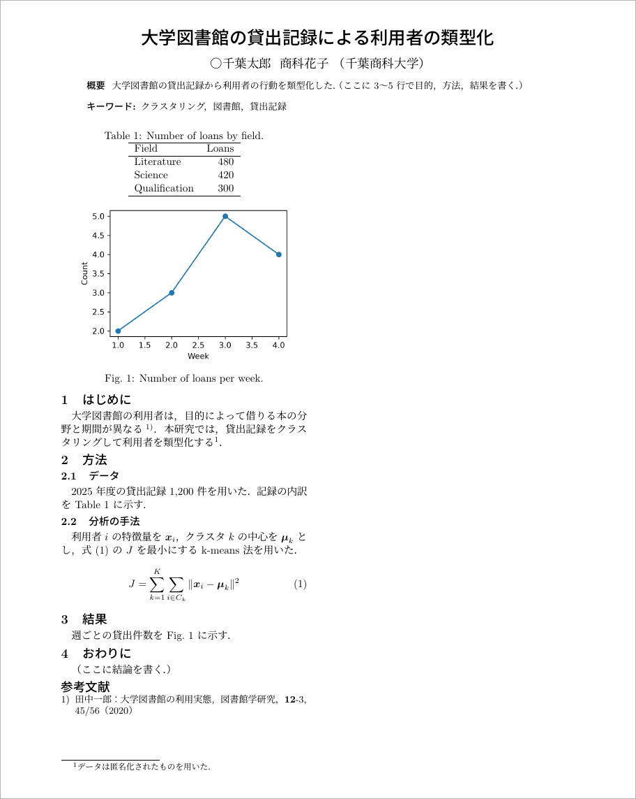

共通資料 LaTeX による原稿作成
TeX Live と VSCode で学会発表の原稿を LaTeX で書き, GitHub で教員と共有する
本資料は複数の講義で共通に使う資料です. 学会発表の原稿を LaTeX で書き, GitHub の private リポジトリで教員と共有するまでを扱います. 原稿の様式には, 計測自動制御学会 (SICE) のシステム・情報部門 学術講演会 (SSI) のテンプレートを使います.
前提として共通資料 プログラミング用の設定で VSCode を, 共通資料 バージョン管理とGitHubで git と GitHub CLI を導入しておいてください.
この資料の情報は, 短い期間で古くなります. TeX Live の版, 学会のテンプレートの配布場所, VSCode の拡張機能の画面は変わります. 資料と実際の画面が食い違ったら, 配布元の最新の情報を確かめてください.
LaTeX で原稿を書く理由
LaTeX は, 文章と書式の指示を書いたテキストファイルから PDF を組版する仕組みです. Word と比べると, 原稿をテキストで書くことで次の 3 つができます.
- 差分を読める: 原稿がテキストなので, git で何を書き換えたかを行単位で確認できます. 教員の添削も差分として残ります.
- 番号と参照を自動で振れる: 図, 表, 数式, 参考文献の番号は LaTeX が振ります. 図を 1 枚足しても, 本文中の「Fig. 2」を手で直す必要はありません.
- 学会の様式に合わせられる: 多くの学会が LaTeX のテンプレートを配布しています. 余白や文字の大きさはテンプレートが決めるので, 書き手は中身に集中できます.
LaTeX の原稿 (.tex) から PDF ができるまでには, 2 つのプログラムを順に動かします. 本資料では日本語に対応した pLaTeX で原稿を組版して .dvi という中間ファイルを作り, dvipdfmx で .dvi を PDF に変換します. SSI のテンプレートは pLaTeX 用に作られているので, それに合わせます.
paper.tex --(platex)--> paper.dvi --(dvipdfmx)--> paper.pdf図や数式の番号を確定させるには pLaTeX を 2 回以上動かす必要があります. この手順は latexmk というプログラムが必要な回数だけ自動で繰り返すので, 書き手が回数を数える必要はありません.
TeX Live のインストール
TeX Live は, pLaTeX, dvipdfmx, latexmk と日本語のフォントをまとめた配布です. 容量が数 GB あり, インストールには 1 時間以上かかることがあります. 時間に余裕のあるときに, 電源とネットワークにつないだ状態で始めてください.
macOS
共通資料 プログラミング用の設定で入れた Homebrew で, TeX Live の macOS 版 (MacTeX) を入れます. -no-gui は, 付属のエディタなどを除いた版です. エディタには VSCode を使うので, こちらで足ります.
brew install --cask mactex-no-gui途中で macOS のパスワードを求められたら入力します. 終わったらターミナルを開き直します.
Windows
winget には TeX Live がありません. TeX Live の公式サイトからインストーラ install-tl-windows.exe をダウンロードし, ダブルクリックで実行します. 警告が出たら「詳細情報」から「実行」を選びます.
インストーラの画面では, 設定を変えずに Install (インストール) を押します. 必要なファイルを 1 つずつダウンロードするので, 回線によっては終わるまで 1 時間以上かかります. 終わったら PowerShell を開き直します.
インストール先のパスに日本語などの ASCII 以外の文字が含まれると, インストールに失敗することがあります. 既定のインストール先 (C:\texlive\2026 のような場所) から変えないでください.
Windows には MiKTeX という別の配布もあり, winget で入れられます. MiKTeX は, 足りないパッケージをビルドのたびに取りに行く仕組みで, latexmk の実行には別途 Perl が必要です. 本資料の設定は TeX Live を前提にしているので, TeX Live を使ってください.
インストールの確認
ターミナル (Windows は PowerShell) で次の 3 つを実行し, いずれもバージョンが表示されることを確認します.
platex --version
dvipdfmx --version
latexmk --versionplatex が見つからないと表示された場合は, ターミナルを開き直してからもう一度試します. それでも見つからない場合は, パソコンを再起動します.
TeX Live を入れる前から VSCode を開いていた場合は, VSCode もすべて終了して起動し直します (macOS はウィンドウを閉じるだけでは終了しないので, Cmd + Q で終了します). 起動中の VSCode は, TeX Live を入れる前のコマンドの探し場所 (環境変数 PATH) を持ち続けるので, ターミナルで確認できても VSCode からのビルドでは latexmk が見つからないことがあります.
VSCode の LaTeX Workshop
VSCode では, 拡張機能 LaTeX Workshop で LaTeX の原稿を編集します. 共通資料 プログラミング用の設定の拡張機能の手順と同じく, 左の拡張機能のアイコンを押し, 検索窓に latex と入力して LaTeX Workshop の install を押します. すでに入れていれば, この手順は不要です.
LaTeX Workshop は, 既定では .tex を書き換えるたびに pdfLaTeX という英語向けのプログラムでビルドしようとします. 日本語の原稿は pdfLaTeX では組版できないので, 後のビルドの設定ファイルで pLaTeX を使うように設定します.
原稿のリポジトリを作る
原稿は, 講義の進捗を記録するリポジトリとは別のリポジトリで管理します. 共著者である教員と共有する範囲を, 原稿だけに限るためです.
共通資料 バージョン管理とGitHubのリポジトリの作成の手順で, private のリポジトリを 1 つ作ります. 手順との違いは次の 2 点です.
- Repository name: 原稿だと分かる名前にします (例:
ssi2026-paper) - Add .gitignore: Python でなく TeX を選びます. ビルドで生まれる中間ファイル (
.aux,.log,.dviなど) が記録の対象から外れます
作成したら, 教員を Collaborator に招待するの手順で教員を招待し, 作業用のディレクトリへ clone します.
cd ~/work
git clone https://github.com/<自分のユーザ名>/ssi2026-paper.git
cd ssi2026-paperclone したら, VSCode で .gitignore を開き, 末尾に次の 2 行を書き足して保存します.
# 原稿の PDF
/*.pdf/*.pdf は, リポジトリの一番上にある PDF (paper.pdf など) を記録の対象から外す指定です. 先頭の / があるので, figures/ に置いた PDF の図は外れません. PDF を記録しない理由は記録するもので説明します. 書き足した .gitignore は, 原稿と一緒に最初の commit に入れます.
SSI のテンプレートを入れる
テンプレートのダウンロード
SSI の大会のページにある発表要領から, LaTeX のテンプレートの UTF-8 版 をダウンロードします. 2026 年の大会ではSSI2026 の発表要領にあります. 年度が変わったら, その年の大会のページを探してください.
ダウンロードした ZIP を展開すると, 次の 4 つのファイルが入っています.
| ファイル | 内容 |
|---|---|
SICE-SSI.sty |
余白, 文字の大きさ, 題目の書式などを決める様式のファイル |
sample.tex |
原稿の見本. 原稿の書き方の注意も本文に書かれている |
sample.pdf |
sample.tex を組版した結果 |
fig1.ps |
見本に載っている図 |
このうち SICE-SSI.sty, sample.tex, fig1.ps の 3 つを, clone したリポジトリのディレクトリへ移します.
テンプレートの書き換え
sample.tex の 21 行目付近に, 図を読み込むパッケージの指定があります.
\usepackage[dvips]{graphicx}dvips は, .dvi を PDF でなく PostScript という形式に変換するプログラムです. 見本の図 fig1.ps は PostScript の図なので, この指定のままでも表示されます. しかし Python で作った PNG の図を読み込むと, dvips の指定では図の大きさを読み取れず, Cannot determine size of graphic というエラーでビルドが止まります. 本資料では dvipdfmx で PDF を作るので, 指定を dvipdfmx に変えます.
\usepackage[dvipdfmx]{graphicx}書き換えはこの 1 か所だけです. テンプレートのそれ以外の部分は, そのまま使えます.
ビルドの設定ファイル
リポジトリの直下に, 次の 2 つのファイルを作ります. どちらもリポジトリに記録するので, 教員が clone したときも同じ設定でビルドできます.
1 つ目は, latexmk の設定ファイル .latexmkrc です. ファイル名は . から始まります.
$latex = 'platex -synctex=1 -interaction=nonstopmode -file-line-error %O %S';
$dvipdf = 'dvipdfmx %O -o %D %S';
$pdf_mode = 3;1 行目は, 組版に platex を使う指定です. 後ろの 3 つのオプションは, PDF と原稿の行を対応づける情報を作ること, エラーで止まらず最後まで処理すること, エラーの位置をファイル名と行番号で表示することを指定します. 2 行目は, .dvi から PDF への変換に dvipdfmx を使う指定です. 3 行目の $pdf_mode = 3 は, latexmk に「.dvi を作り, dvipdfmx で PDF にする」という手順を選ばせます.
2 つ目は, VSCode の設定ファイル .vscode/settings.json です. リポジトリの直下に .vscode というディレクトリを作り, その中に置きます.
{
"latex-workshop.latex.recipe.default": "latexmk (latexmkrc)",
"latex-workshop.latex.autoBuild.run": "onSave"
}1 行目は, LaTeX Workshop に .latexmkrc の設定どおりに latexmk を動かす手順 (recipe) を選ばせます. 2 行目は, ファイルを保存したときにビルドする指定です. このファイルはこのリポジトリを開いたときだけ効くので, 他のリポジトリの VSCode の設定は変わりません.
ここまでで, リポジトリは次の構成になります (README.md と .gitignore はリポジトリの作成時にできたものです).
ssi2026-paper/
├── .gitignore
├── .latexmkrc
├── .vscode/
│ └── settings.json
├── README.md
├── SICE-SSI.sty
├── fig1.ps
└── sample.tex保存でビルドされることの確認
VSCode でリポジトリのディレクトリを開き, sample.tex を開きます. 何か 1 文字書き足して消し, Ctrl + S (macOS は Cmd + S) で保存します.
保存するとビルドが始まり, 画面の下端のステータスバーに進み具合が表示されます. 終わると sample.tex と同じディレクトリに sample.pdf ができます. エディタの右上にある View LaTeX PDF のアイコンを押すと, PDF がエディタの右側に開きます. 開いた PDF は, 保存してビルドし直すたびに更新されます.
ビルドに失敗すると, 画面の下の「問題」(Problems) の欄にエラーが表示されます. エラーの読み方はエラーが出たときで扱います.
原稿の書き方
sample.tex は SSI の注意書きを兼ねた見本なので, 自分の原稿は別のファイル paper.tex に書きます. 見本の sample.tex と fig1.ps は, 自分の原稿がビルドできたら削除して構いません.
原稿の骨組み
次の paper.tex は, SSI の原稿に必要な要素をひととおり含む骨組みです. 研究の内容は架空のもので, 参考文献も実在しません.
\documentclass{jarticle}
\usepackage{SICE-SSI}
\usepackage[dvipdfmx]{graphicx}
\usepackage{amsmath}
\begin{document}
\title{大学図書館の貸出記録による利用者の類型化}
\author{○千葉太郎\ \ 商科花子\ （千葉商科大学）}
\abstract{
大学図書館の貸出記録から利用者の行動を類型化した．
（ここに 3〜5 行で目的，方法，結果を書く．）
}
\keyword{クラスタリング，図書館，貸出記録}
\maketitle\thispagestyle{empty}
\pagestyle{empty}
\section{はじめに}
大学図書館の利用者は，目的によって借りる本の分野と期間が異なる\cite{tanaka2020}．
本研究では，貸出記録をクラスタリングして利用者を類型化する\footnote{データは匿名化されたものを用いた．}．
\section{方法}
\subsection{データ}
2025 年度の貸出記録 1,200 件を用いた．記録の内訳を Table~\ref{tab:data} に示す．
\begin{table}[t]
\centering
\caption{Number of loans by field.}
\label{tab:data}
\begin{tabular}{lr}
\hline
Field & Loans \\
\hline
Literature & 480 \\
Science & 420 \\
Qualification & 300 \\
\hline
\end{tabular}
\end{table}
\subsection{分析の手法}
利用者 $i$ の特徴量を $\boldsymbol{x}_i$，クラスタ $k$ の中心を $\boldsymbol{\mu}_k$ とし，
式 \eqref{eq:kmeans} の $J$ を最小にする k-means 法を用いた．
\begin{equation}
J = \sum_{k=1}^{K} \sum_{i \in C_k} \| \boldsymbol{x}_i - \boldsymbol{\mu}_k \|^2
\label{eq:kmeans}
\end{equation}
\section{結果}
週ごとの貸出件数を Fig.~\ref{fig:count} に示す．
\begin{figure}[t]
\centering
\includegraphics[width=0.9\linewidth]{figures/count.png}
\caption{Number of loans per week.}
\label{fig:count}
\end{figure}
\section{おわりに}
（ここに結論を書く．）
\small
\begin{thebibliography}{9}
\bibitem{tanaka2020}
田中一郎：大学図書館の利用実態，図書館学研究，\textbf{12}-3，45/56（2020）
\end{thebibliography}
\normalsize
\end{document}図のファイル figures/count.png を用意してから保存すると, 次の PDF ができます. 表と図は [t] の指定によりページの上端に置かれ, 本文は 2 段組になります.

LaTeX の原稿は, \ で始まるコマンドと, \begin{...} から \end{...} までで範囲を指定する環境で書式を指示します. \begin{document} より前をプリアンブルといい, 使う様式とパッケージを宣言します. 骨組みの 1〜4 行目は, jarticle (日本語の論文の基本の書式) に SSI の様式 SICE-SSI を重ね, 図を読み込む graphicx と数式を書く amsmath を使う宣言です.
SSI の見本は, 句読点に全角の「，」と「．」を使っています. 骨組みもそれに合わせています. どちらに揃えるかは, 投稿先の見本と共著者の指示に従ってください.
題目, 著者, 概要, キーワード
\title, \author, \abstract, \keyword に書いた内容は, \maketitle の位置に 1 段組で組まれます. SSI の様式では次の点に従います.
- 著者: 発表する人 (登壇者) の名前の前に
○を付けます. 名前の間は\ \で空白を空け, 最後に所属を全角の括弧で書きます - 概要: 目的, 方法, 結果を 3〜5 行にまとめます
- キーワード: 3〜5 語を
，で区切ります
\maketitle の後の \thispagestyle{empty} と \pagestyle{empty} は, ページ番号を付けない指定です. SSI の見本のとおりに残してください.
節と小節
\section{...} で節, \subsection{...} で小節を作ります. 番号 (1, 2.1 など) は LaTeX が振ります. 番号を付けたくない見出しには \section*{...} と * を付けます.
本文の段落は, 空行で区切ります. 1 行の改行だけでは段落は変わりません. 原稿のテキストでは 1 文ごとに改行しておくと, git の差分が文単位で表示され, 教員の添削がどの文に入ったかを読みやすくなります.
数式
文中の数式は $ で囲みます. $\boldsymbol{x}_i$ は太字のベクトル \boldsymbol{x}_i に, _ は下付き, ^ は上付きになります.
番号を付けて別の行に置く数式は equation 環境で書き, \label{...} で名前を付けます. 本文からは \eqref{...} で参照すると, 括弧つきの番号 (1) が入ります.
\begin{equation}
J = \sum_{k=1}^{K} \sum_{i \in C_k} \| \boldsymbol{x}_i - \boldsymbol{\mu}_k \|^2
\label{eq:kmeans}
\end{equation}\sum_{k=1}^{K} は \sum_{k=1}^{K} に, \in は \in に, \| はノルムの記号 \| になります. 記号の書き方が分からないときは, 「LaTeX 記号名」で検索するか, 書きたい数式をコーディングエージェントに伝えて LaTeX の書き方を尋ねてください. 尋ねた結果は, ビルドした PDF で意図した数式になっているかを必ず確認します.
図
図のファイルは, リポジトリに figures というディレクトリを作って置きます. Python で作った図は, savefig で解像度を指定して PNG で保存します.
fig.savefig("figures/count.png", dpi=300)dpi=300 は, 1 インチあたり 300 画素で保存する指定です. 2 段組の原稿では図が小さく印刷されるので, 既定の解像度では文字がにじみます.
原稿では figure 環境の中で \includegraphics を使って読み込みます. width=0.9\linewidth は, 図の幅を段の幅の 9 割にする指定です. 段をまたいで横いっぱいに置きたい図は, figure を figure* に変えます.
\begin{figure}[t]
\centering
\includegraphics[width=0.9\linewidth]{figures/count.png}
\caption{Number of loans per week.}
\label{fig:count}
\end{figure}SSI の様式では, 図の説明文 (\caption) と図の中の文字を英語で書き, 本文からは「Fig.~ に示す」のように Fig. を付けて参照します. ~ は改行しない空白で, 「Fig.」と番号が行をまたいで分かれるのを防ぎます. Python で図を作るときも, 軸の名前などを英語にしておきます.
表
表は table 環境の中に tabular 環境で書きます. {lr} は列ごとの文字の寄せ方で, l は左寄せ, r は右寄せ, c は中央です. 列は & で区切り, 行の終わりに \\ を書きます. \hline は横線です.
\begin{table}[t]
\centering
\caption{Number of loans by field.}
\label{tab:data}
\begin{tabular}{lr}
\hline
Field & Loans \\
\hline
Literature & 480 \\
\hline
\end{tabular}
\end{table}表の説明文は表の上に置くので, \caption を tabular より前に書きます. 本文からは Table~\ref{tab:data} で参照します.
参考文献
参考文献は, 原稿の最後の thebibliography 環境に \bibitem{名前} で 1 件ずつ書き, 本文からは \cite{名前} で引用します. SSI の様式では, 引用した箇所に上付きの番号 1) が入ります. 番号は \bibitem を書いた順に振られます.
文献の書き方は, SSI の見本が次の形式を推奨しています. 巻の番号は \textbf{...} で太字にします.
雑誌論文: 著者：論文題目，雑誌名，巻-号，始ページ/終ページ（年）
単行本: 著者：書名，始ページ/終ページ，発行所（発行年）脚注
\footnote{...} を書いた位置に番号が入り, 内容は段の下に置かれます. 題目に付ける注 (他の学会で発表済みであることの断り書きなど) は, \title の中で \thanks{...} を使います.
エラーが出たとき
ビルドに失敗すると, 「問題」(Problems) の欄にエラーの内容と行番号が出ます. 行番号の位置か, その少し前に原因があります. 初めのうちによく出るエラーは次の 3 つです.
| エラーの表示 | よくある原因 |
|---|---|
Undefined control sequence |
コマンドの綴りの誤り, またはそのコマンドを含むパッケージを \usepackage していない |
Missing $ inserted |
_ や ^ を $ の外で使った. 文中で記号として書くときは \_ と書く |
File 'figures/count.png' not found |
図のファイルの名前か置き場所の誤り. .tex からの相対パスで書く |
Cannot determine size of graphic |
graphicx の指定が dvips のまま. テンプレートの書き換えを参照 |
% から行末まではコメントとして無視されます. 本文で % を記号として書くときは \% と書きます.
PDF の参照が ?? と表示される場合は, 番号がまだ確定していません. もう一度保存すると latexmk が組版を繰り返し, 番号が入ります. それでも ?? のままなら, \label と \ref の名前が一致しているかを確認します.
GitHub で教員と共有する
記録するもの
リポジトリには, 原稿を組版し直すのに必要なファイルだけを記録します.
| 記録するもの | 理由 |
|---|---|
paper.tex, SICE-SSI.sty |
原稿と様式 |
figures/ の図 |
原稿が読み込む |
.latexmkrc, .vscode/settings.json |
誰が clone しても同じ設定でビルドするため |
.gitignore |
誰が clone しても同じものを記録の対象から外すため |
組版した paper.pdf は記録しません. PDF は中身が文字でないので, git は行に分けて合わせられません. 教員と自分の両方が PDF を記録すると, 本文の別々の箇所を直していても, git pull のたびに PDF がコンフリクトになります. PDF は原稿からいつでも作り直せるので, 記録するのは原稿だけにし, PDF は各自の手元でビルドします.
.aux, .log, .dvi, .synctex.gz などの中間ファイルは, リポジトリの作成時に選んだ TeX 用の .gitignore によって, paper.pdf は clone の後に書き足した /*.pdf によって, 記録の対象から外れます. どちらも git status に出てこないことを確認してください.
記録して送る
共通資料 バージョン管理とGitHubの日常的に使うコマンドで, 原稿の変更を記録して送ります.
git status
git diff paper.tex
git add paper.tex figures/
git commit -m "結果の節に貸出件数の図を加える"
git push変更の確認は paper.tex の差分で行い, 紙面はビルドした PDF を目で確かめます.
教員の添削を取り込む
教員は, 原稿を手元に取り込んでビルドした PDF を読み, 原稿を直接直して commit することがあります. 教員が push した変更は git pull で手元に取り込み, 自分の変更と合わせます. pull と merge の使い方, 最初に一度だけ行う設定, コンフリクトの解決の手順は, 共通資料 バージョン管理とGitHubのpull: GitHub 側の変更を取り込むとmerge: 2 つの変更を合わせるで扱います.
原稿のリポジトリでは, 作業を始める前に毎回 git pull します. 取り込んだ後に git log を実行すると, 教員の commit が履歴に並んでいます. どこを直されたかは, git show <commit の識別子> で差分として確認できます.
手元の paper.pdf は記録していないので, git pull では更新されません. 取り込んだ後に VSCode で paper.tex を開いて保存し, PDF を作り直してから, 教員の添削が紙面に入っていることを確かめます.
教員と自分が paper.tex の同じ行を直していると, git pull はコンフリクトで止まります. そのときはコンフリクトの解決の手順で印を消して書き直し, 保存して PDF を作り直し, 紙面を確かめてから commit します. どちらを残すか判断できないときは, git merge --abort で合流を始める前の状態に戻し, 教員に相談してください.
演習
Exercise LATEX-1
SSI のテンプレートを保存でビルドする
platex --version,dvipdfmx --version,latexmk --versionがすべて表示されることを確認する.- GitHub で原稿用の private のリポジトリを作り (Add .gitignore は TeX), 教員を Collaborator に招待して, 手元に clone する. clone したら
.gitignoreの末尾に/*.pdfを書き足す. - SSI のテンプレートの UTF-8 版をダウンロードし,
SICE-SSI.sty,sample.tex,fig1.psをリポジトリに移す. sample.texのdvipsをdvipdfmxに書き換える..latexmkrcと.vscode/settings.jsonを作る.- VSCode で
sample.texを開いて保存し,sample.pdfができることと, 見本のsample.pdfと同じ紙面になることを確かめる.
4 の書き換えが必要な理由を説明できるようにしてください.
回答例
6 で, 題目から参考文献までが 1 ページに収まり, 右の段の上端に図が入った PDF ができれば成功です.
見本の図 fig1.ps は PostScript なので, 4 の書き換えをしなくても表示されます. 書き換えが必要になるのは, PNG の図を読み込むときです. dvips の指定のままだと PNG の図の大きさを読み取れず, Cannot determine size of graphic というエラーでビルドが止まります. 本資料は dvipdfmx で PDF を作るので, graphicx にもそれを伝えます.
Exercise LATEX-2
自分の原稿の骨組みを作る
自分の研究の題目で paper.tex を作ります. 次をすべて含めてください.
- 題目, 著者 (自分に
○), 概要, キーワード - 「はじめに」「方法」「結果」「おわりに」の 4 つの節
- 番号つきの数式を 1 つと, 本文からのその参照
- Python で作った図を 1 枚 (説明文は英語) と, 本文からのその参照
- 表を 1 つと, 本文からのその参照
- 参考文献を 2 件と, 本文からの引用
中身はまだ仮の文章で構いません. ビルドした PDF で, 図, 表, 数式, 参考文献の番号が ?? でなく数字になっていることを確認してください.
回答例
原稿の骨組みの paper.tex が 1 つの回答例です. 参考文献を 2 件にするには, thebibliography に \bibitem をもう 1 つ足し, 本文のどこかで \cite します.
番号が ?? のまま残る場合は, \label{...} と \ref{...} (\eqref{...}, \cite{...}) の名前の綴りが一致しているかを確認します. \label は \caption より後に書きます. 前に書くと, 図や表でなく節の番号を指します.
Exercise LATEX-3
原稿を push して教員と共有する
git statusで, 中間ファイル (.aux,.log,.dviなど) とpaper.pdfが出てこないことを確認する.paper.tex,figures/,SICE-SSI.sty,.latexmkrc,.vscode/settings.json,.gitignoreを commit して push する.- GitHub のリポジトリのページで, 2 のファイルが並び,
paper.pdfと中間ファイルが無いことを確認する. - リポジトリの Settings の Collaborators で, 教員が招待を受け取ったか (Pending のままでないか) を確認する.
回答例
git status
git add paper.tex figures/ SICE-SSI.sty .latexmkrc .vscode/settings.json .gitignore
git diff --staged --stat
git commit -m "SSI の原稿の骨組みを作る"
git pushgit diff --staged --stat は, 記録するファイルの一覧と変更した行数だけを表示します. 中間ファイルと paper.pdf が一覧に入っていないことを, commit の前にもう一度確かめられます.
4 で Pending のままなら, 教員がまだ招待を受け取っていません. 招待は 7 日で失効するので, 失効していたら招待し直します.
この資料を使う講義
この資料は, 次の講義から参照されます. 講義ごとの扱いは, それぞれの資料の最初の章で案内します.